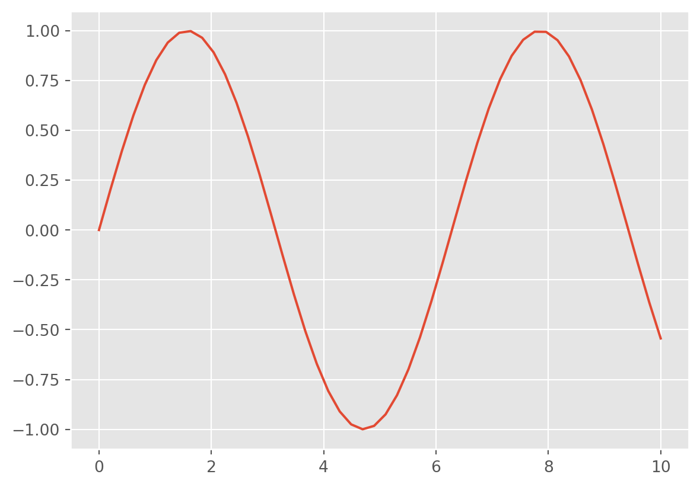

import math
math.sqrt(9)3.0As a data scientist, you won’t be writing every piece of code from scratch. Python’s true power comes from its ecosystem of packages, libraries, and modules that extend its core functionality. These tools allow you to analyze data, build machine learning models, visualize patterns, and automate complex tasks with just a few lines of code.
In this chapter, we’ll explore what packages, libraries, and modules are, how to use them, and get hands-on with both built-in and third-party tools that will support you throughout this course.
By the end of this chapter, you will be able to:
math, os, random).numpy, pandas, matplotlib, and seaborn.As you read through this chapter, we encourage you to follow along using the companion notebook in Google Colab (or other editor of choice). This interactive notebook lets you run code examples covered in the chapter—and experiment with your own ideas.
üëâ Open the Libraries Notebook in Colab.
You’ve probably heard that Python is one of the most popular languages in data science—but what makes it so powerful? One big reason is that Python gives you access to an enormous number of libraries that other people have written and shared.
A library is a reusable collection of code—functions, tools, or entire frameworks—that someone else has written to make your life easier. Think of libraries as toolkits: instead of building a hammer every time you need to drive a nail, you just grab the hammer from your toolbox.
Python libraries can help you:
By using the right library, you can accomplish in just a few lines of code what might otherwise take hours of work.
Libraries are organized into modules, which are just files that group related code together. And when a collection of modules is bundled up and made shareable, we call that a package.
Throughout this course, you’ll learn how to use some of the most powerful and popular Python libraries for data science. But first, let’s get familiar with the different types of libraries available and how to start using them.
These three terms often get used interchangeably, but they have specific meanings in Python: * Module: A single .py file that contains Python code—functions, variables, classes—that you can reuse. For example, the math module lets you do mathematical calculations.
.py file that contains Python code—functions, variables, classes—that you can reuse. For example, the math module lets you do mathematical calculations.pandas is a library that includes several modules for data manipulation.__init__.py file that tells Python it’s a package. You can think of a package as the container that holds libraries and modules.In practice, you’ll often hear “library” and “package” used to refer to the same thing: something you install with pip and then import to use in your code. That’s okay! At this point in your learning, understanding the subtle differences between these terms is not critical. What’s more important is knowing that Python’s modular structure allows you to mix and match tools depending on your needs and that these tools make your work much more efficient.
One of Python’s greatest strengths is its large collection of prebuilt tools. These tools fall into two broad categories: the standard library, which comes bundled with every Python installation, and third-party libraries, which you can download and install as needed.
The standard library is like Python’s starter toolbox. It includes modules for doing math, generating random numbers, managing dates and times, reading and writing files, and even accessing the internet. Because it’s included with Python, you can use these modules right away—no installation required.
For example:
math module.random.os module has answers.These are great building blocks and perfect for learning foundational programming skills.
You can explore the full list of available modules in Python’s standard library by visiting the official documentation here: https://docs.python.org/3/library/index.html
As powerful as the standard library is, it doesn’t cover everything. That’s where third-party libraries come in. These are tools developed and maintained by the Python community to solve specific problems more efficiently. To use them, you’ll typically install them using a package manager called pip.
For example:
pandas.matplotlib and seaborn.numpy.These libraries aren’t included by default, but they’re easy to install—and essential for doing real-world data science.
| Standard Library | Third-Party Library |
|---|---|
| Already installed with Python | Installed manually (via pip) |
Examples: math, os, random, datetime |
Examples: pandas, numpy, matplotlib, seaborn |
| No internet needed to use | Requires internet to install |
Understanding the difference between these two categories will help you know when to reach for built-in tools versus when to seek out more powerful external solutions.
The standard library is like Python’s built-in Swiss Army knife. It includes dozens of modules for common programming tasks—and because it’s part of every Python installation, you can start using it immediately without needing to install anything.
To use a module from the standard library, you simply use the import statement. Once imported, you can access its functions and tools using dot notation.
For example, to use the math library to calculate the square root of a number we need to first import the math library and then we can access the square root function like below:
import math
math.sqrt(9)3.0There are many useful standard libraries - here is an extremely incomplete list of some of the modules you might wish to explore and learn about:
os and sys: Tools for interfacing with the operating system, including navigating file directory structures and executing shell commandsmath and cmath: Mathematical functions and operations on real and complex numbersitertools: Tools for constructing and interacting with iterators and generatorsfunctools: Tools that assist with functional programmingrandom: Tools for generating pseudorandom numberspickle: Tools for object persistence: saving objects to and loading objects from diskjson and csv: Tools for reading JSON-formatted and CSV-formatted files.urllib: Tools for doing HTTP and other web requests.datetime: Tools for working with dates, times, and time intervalsLet’s see a few of these in action.
math: Mathematical FunctionsThe math module gives you access to a wide variety of mathematical operations beyond basic arithmetic. These include square roots, exponentials, logarithms, trigonometric functions, and more.
Here’s a simple example:
import math
print(math.ceil(9.2)) # Returns the smallest integer greater than or equal to 9.2 (i.e., 10)
print(math.factorial(6)) # Returns the factorial of 6 (i.e., 720)
print(math.sqrt(121)) # Returns the square root of 121 (i.e., 11.0)10
720
11.0os: Interacting with the Operating SystemThe os module allows you to interact with your computer’s operating system. It’s helpful for navigating file paths, checking directories, and automating file-related tasks.
Example:
import os
# Get the current working directory
print("Current working directory:", os.getcwd())
# List the files and folders in that directory
print("Contents of the directory:", os.listdir())Current working directory: /home/runner/work/uc-bana-4080/uc-bana-4080/book
Contents of the directory: ['10-manipulating-data.quarto_ipynb', 'index.quarto_ipynb', '.gitignore', '15-data-viz-bokeh.qmd', 'images', '17-iteration-statements.quarto_ipynb', '06-libraries.qmd', '17-iteration-statements.qmd', '12-joining-data.quarto_ipynb', '09-subsetting.quarto_ipynb', '03-python-basics.html', '15-data-viz-bokeh.quarto_ipynb', '02-preparing-for-code.html', '_book', 'summary.qmd', '13-data-viz-pandas.quarto_ipynb', '14-data-viz-matplotlib.quarto_ipynb', '07-importing-data.quarto_ipynb', '16-control-statements.quarto_ipynb', '18-functions.quarto_ipynb', '04-jupyter.qmd', '06-libraries.quarto_ipynb', '04-jupyter.html', '_quarto.yml', '99-anaconda-install.qmd', '05-data-structures.quarto_ipynb', '08-dataframes.quarto_ipynb', '05-data-structures.qmd', '05-data-structures.html', '08-dataframes.qmd', '02-preparing-for-code.qmd', '09-subsetting.qmd', '16-control-statements.qmd', 'index.qmd', '12-joining-data.qmd', '01-intro-data-mining.qmd', '.quarto', '11_aggregating_data.qmd', '10-manipulating-data.qmd', '13-data-viz-pandas.qmd', 'references.qmd', 'site_libs', 'index.html', '11_aggregating_data.quarto_ipynb', '14-data-viz-matplotlib.qmd', '03-python-basics.quarto_ipynb', 'references.bib', '03-python-basics.qmd', '18-functions.qmd', '99-vscode-install.qmd', 'cover.png', '07-importing-data.qmd', '01-intro-data-mining.html']datetime: Working with Dates and TimesThe datetime module is essential for handling and manipulating dates and times. You can get the current date, format it in a specific way, or calculate time differences.
Example:
import datetime
# Get today's date
today = datetime.date.today()
print("Today's date is:", today)
# Create a specific date
birthday = datetime.date(1980, 8, 24)
print("Birth date:", birthday)
# How many days have I been on earth
days_alive = (today-birthday).days
print("Days on earth:", days_alive)Today's date is: 2025-08-18
Birth date: 1980-08-24
Days on earth: 16430The standard library is powerful, but when you begin working on real-world data science tasks, you’ll quickly find yourself needing more specialized tools. This is where third-party libraries come in. One of the things that makes Python useful, especially within the world of data science, is its ecosystem of third-party modules. These are external packages developed by the Python community and are not included with Python by default.
These packages are typically hosted on a package manager and Python Package Index (PyPI for short) and Anaconda are the two primary public package managers for Python. As of June 2025 there was about 645,000 packages available through the Python Package Index (PyPI)! Usually, you can ask Google or ChatGPT about what you are trying to do, and there is often a third party module to help you do it.
To install packages from PyPI we can either type the following in our terminal:
# install from PyPI
pip install pkg_nameAlternatively, you can install Python packages directly from a code cell in Jupyter notebooks by prefixing the pip install command with an exclamation mark (!). For example:
# install within Jupyter notebook cell
!pip install pkg_nameThis allows you to manage dependencies without leaving your notebook environment.
Go ahead and see if you can pip install the pandas library.
Once a package is installed, you can import the library using the import statement and optionally assign it an alias (a short nickname), which is a common convention:
# install within Jupyter notebook cell
!pip install pandas# import package using the `pd` alias
import pandas as pdThroughout this course we’ll use several third party libraries focused on data science – for example Numpy, SciPy, Pandas, Scikit-learn, among others. Let’s look at some examples of these third party packages to give you a flavor of what they do. Don’t worry, we’ll go into some of these more thoroughly in later lessons!
NumPy provides an efficient way to store and manipulate multi-dimensional dense arrays in Python. The important features of NumPy are:
Although the package is officially spelled “NumPy” you will commonly see it referred to as Numpy and numpy across the Python ecosystem (and even within this course).
In the simplest case, NumPy arrays look a lot like Python lists. For example, here is an array containing the range of numbers 1 to 9:
import numpy as np
x = np.arange(1, 10)
xarray([1, 2, 3, 4, 5, 6, 7, 8, 9])Standard convention is to import numpy as the np alias.
NumPy’s arrays offer both efficient storage of data, as well as efficient element-wise operations on the data. For example, to square each element of the array, we can apply the ** operator to the array directly:
x ** 2array([ 1, 4, 9, 16, 25, 36, 49, 64, 81])This element-wise operation capability (commonly referred to as vectorization) is extremely useful but is not available in base Python. In base Python, if you had a list of these same numbers you would have to loop through each element in the list and compute the square of each number:
x_list = [1, 2, 3, 4, 5, 6, 7, 8, 9]
# not supported
x_list ** 2--------------------------------------------------------------------------- TypeError Traceback (most recent call last) Cell In[7], line 4 1 x_list = [1, 2, 3, 4, 5, 6, 7, 8, 9] 3 # not supported ----> 4 x_list ** 2 TypeError: unsupported operand type(s) for ** or pow(): 'list' and 'int'
We would need to use a non-vectorized approach that iterates through each element and computes the square. The below illustrates the much more verbose non-vectorized approach that produces the same result:
Don’t worry about the syntax, you will learn about this in a later lesson. Just note how the above approach with Numpy is far more convenient!
x_squared = [val ** 2 for val in x_list]
x_squared[1, 4, 9, 16, 25, 36, 49, 64, 81]Numpy also provides a host of other vectorized arithmetic capabilities. For example, we can compute the mean of a list with the following:
np.mean([1, 2, 3, 4, 5, 6, 7, 8, 9, 10])np.float64(5.5)Unlike Python lists (which are limited to one dimension), NumPy arrays can be multi-dimensional. For example, here we will reshape our x array into a 3x3 matrix:
m = x.reshape((3, 3))
marray([[1, 2, 3],
[4, 5, 6],
[7, 8, 9]])A two-dimensional array is one representation of a matrix, and NumPy knows how to efficiently do typical matrix operations. For example, you can compute the transpose using .T:
m.Tarray([[1, 4, 7],
[2, 5, 8],
[3, 6, 9]])or a matrix-vector product using np.dot:
np.dot(m, [5, 6, 7])array([ 38, 92, 146])and even more sophisticated operations like eigenvalue decomposition:
np.linalg.eigvals(m)array([ 1.61168440e+01, -1.11684397e+00, -1.30367773e-15])Such linear algebraic manipulation underpins much of modern data analysis, particularly when it comes to the fields of machine learning and data mining.
Pandas is a much newer package than Numpy, and is in fact built on top of it. What Pandas provides is a labeled interface to multi-dimensional data, in the form of a DataFrame object that will feel very familiar to users of R and related languages. DataFrames in Pandas look something like the following.
It is a common convention to import Pandas with the pd alias.
import pandas as pd
df = pd.DataFrame({'label': ['A', 'B', 'C', 'A', 'B', 'C'],
'value': [1, 2, 3, 4, 5, 6]})The Pandas interface allows you to do things like select columns by name:
df['label']0 A
1 B
2 C
3 A
4 B
5 C
Name: label, dtype: objectApply string operations across string entries:
df['label'].str.lower()0 a
1 b
2 c
3 a
4 b
5 c
Name: label, dtype: objectCompute statistical aggregations for numerical columns:
df['value'].sum()np.int64(21)And, perhaps most importantly, do efficient database-style joins and groupings:
df.groupby('label').sum()| value | |
|---|---|
| label | |
| A | 5 |
| B | 7 |
| C | 9 |
Here in one line we have computed the sum of all objects sharing the same label, something that is much more verbose (and much less efficient) using tools provided in Numpy and core Python.
In future lessons we will go much deeper into Pandas and you’ll also see a large dependency on using Pandas as we start exploring other parts of the statistical computing ecosystem (i.e. visualization, machine learning).
Matplotlib is currently the most popular scientific visualization packages in Python. Even proponents admit that its interface is sometimes overly verbose, but it is a powerful library for creating a large range of plots.
It is a common convention to import Matplotlib with the plt alias.
import matplotlib.pyplot as plt
plt.style.use('ggplot') # make graphs in the style of R's ggplotNow let’s create some data and plot the results:
x = np.linspace(0, 10) # range of values from 0 to 10
y = np.sin(x) # sine of these values
plt.plot(x, y); # plot as a line
This is the simplest example of a Matplotlib plot; for ideas on the wide range of plot types available, see Matplotlib’s online gallery.
Although you’ll be exposed to some Matplotlib throughout this course, we will tend to focus on other third-party visualization packages that are simpler to use.
SciPy is a collection of scientific functionality that is built on Numpy. The package began as a set of Python wrappers to well-known Fortran libraries for numerical computing, and has grown from there. The package is arranged as a set of submodules, each implementing some class of numerical algorithms. Here is an incomplete sample of some of the more important ones for data science:
For example, let’s take a look at interpolating a smooth curve between some data
from scipy import interpolate
# choose eight points between 0 and 10
x = np.linspace(0, 10, 8)
y = np.sin(x)
# create a cubic interpolation function
func = interpolate.interp1d(x, y, kind='cubic')
# interpolate on a grid of 1,000 points
x_interp = np.linspace(0, 10, 1000)
y_interp = func(x_interp)
# plot the results
plt.figure() # new figure
plt.plot(x, y, 'o')
plt.plot(x_interp, y_interp);What we see is a smooth interpolation between the points.
Built on top of these tools are a host of other data science packages, including general tools like Scikit-Learn for machine learning, Scikit-Image for image analysis, Seaborn for statistical visualization, and Statsmodels for statistical modeling; as well as more domain-specific packages like AstroPy for astronomy and astrophysics, NiPy for neuro-imaging, and many, many more.
No matter what type of scientific, numerical, or statistical problem you are facing, it’s likely there is a Python package out there that can help you solve it.
In this chapter, you learned that one of Python’s greatest strengths is its rich ecosystem of reusable code—organized into modules, libraries, and packages. These tools allow you to write less code, solve complex problems more efficiently, and leverage the collective efforts of the Python community.
We began by discussing the difference between Python’s standard library and third-party libraries. You learned how to use built-in tools like math, os, and datetime for essential tasks, and how to install and import third-party packages using pip.
We then explored Python’s thriving data science ecosystem—highlighting libraries like NumPy, Pandas, Matplotlib, Seaborn, and SciPy. These libraries will be your go-to tools for data wrangling, statistical modeling, and visualization throughout this course and beyond.
You don’t need to memorize every function from every package right now. Instead, focus on building awareness of what kinds of tools exist and how to access them. The more you practice, the more fluent you’ll become in navigating and using Python’s expansive ecosystem.
Create a new Jupyter notebook titled chapter-6-libraries-practice.ipynb. This notebook should include markdown cells to describe each section of your work and code cells to perform the tasks below. Be sure to run your code and document your findings or observations.